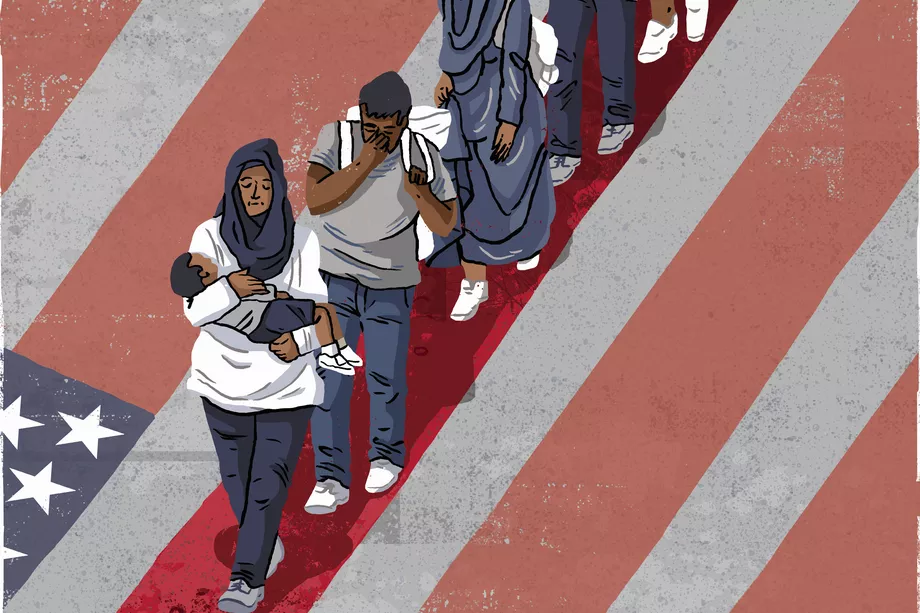

How do we combat Islamophobia?
"You can’t fight prejudice with name calling."
Based on my research, here are some ways we can combat Islamophobia. This will be divided into two parts; Self and Preventive

Ikon Images/Eva Bee/Getty Creative Images
Self
Educate your children: Prejudice starts young and begins with the messages we are taught in adolescence. If these messages of prejudice are consistent growing up, the possibility of growing up Islamophobic is very high. Inform your children about Islam and Muslims directly. Scrutinize what media your children are consuming and replace it with more diverse educational options.
Become friends with Muslims: This is easier than people realize. First of all, you might already be friends with a Muslim and not even realize it. Not everyone is “visibly” Muslim as the media would have us believe. Second of all, visiting mosques and joining interfaith coalitions is a sure-fire way to meet them. Muslims are just like regular people because they are people. Some Muslims may be more approachable and socially adept – others, not so much.
Yelet. Muslim and Caucasian Girl Friends - Illustration. 14 Aug. 2014. iStockImages.com
Visit a Muslim country: Who doesn’t love traveling?! Of course, you want to pick one of the few that is not on fire right now, but visiting a Muslim country is one of the quickest ways to learn a whole lot about Islam and Muslims and to see that they are just living their lives like the rest of the world. Speaking in generalizations, you are bound to get some delicious food and incredible hospitality along the way. Plus, hearing the call-to-prayer five times a day is beautiful and a totally unique experience. Morocco, Egypt, Indonesia, Jordan, United Arab Emirates and many others.
Spread the word on social media: Don’t be afraid to share positive stories about Muslims on your social media accounts, even if you don’t have a single Muslim friend or ally on your page to back you up. You do not have a single need to respond to haters so let them fill the comments sections how they want – for every ten haters your posts attract, there are likely double that amount of sensible people, watching in the shadows, learning from the information you put out there and changing their worldviews as a result.
More Employers Relying on Social Media. 23 June 2017. Defendernetwork.com
Interrupt Islamophobia every single time you encounter it: Every time you hear someone uttering falsehoods about Muslims, or generalizing about Islam: speak up.
If you’re a journalist, share good news about Muslims: Take the time to find the positive stories (and there are plenty) that have Muslims at their heart. Use these narratives as a way to counter the overwhelming deluge of Muslim stereotypes found in mainstream media today. A case in point is the fact that the term terrorist is only associated with acts of violence perpetuated by Muslims, whether or not that individual acted alone or was mentally unstable. In the cases of white violence, mental illness excuses pervade.
Positive Retro Journalist Interviews Press Media Report. 5 May 2018. shutterstock.com